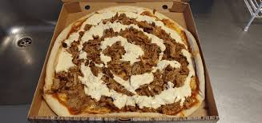

Kebabpizza

Kebab pizza is a fusion dish that combines traditional pizza with the flavors of kebab. It typically features a pizza base topped with kebab-style meat (such as lamb, chicken, or beef), alongside classic pizza toppings like cheese, vegetables, and sauces. The dish is often served with a yogurt or garlic sauce, giving it a unique, savory twist. Kebab pizza is popular in many countries, particularly in Europe, where it blends the best of both kebab and pizza cultures.
A crispy pizza crust topped with tangy tomato sauce, tender, spiced kebab meat, and melted cheese. Fresh vegetables like onions and tomatoes add a burst of flavor, creating a perfect blend of savory, spicy, and cheesy goodness in every bite.
ingridents
Pizza dough
Tomato sauce
Cooked kebab meat (beef, chicken, or lamb, seasoned)
Mozzarella cheese (grated)
Red onion (sliced)
Tomato (sliced)
Green bell pepper (optional, sliced)
Olives (optional)
Olive oil (for drizzling)
Dried oregano or thyme (optional, for seasoning)
Steps
- Preheat the oven to 245°C.
- Prepare the pizza dough by rolling it out on a floured surface to your desired thickness.
- Spread tomato sauce evenly over the rolled-out dough.
- Add mozzarella cheese by sprinkling a generous amount on top of the sauce.
- Layer the cooked kebab meat evenly over the cheese. (Make sure the meat is sliced or crumbled into bite-sized pieces.)
- Place sliced red onions and sliced tomatoes on top of the meat.
- Optionally, add sliced green bell peppers and/or olives for extra flavor and color.
- Drizzle olive oil lightly over the pizza to enhance the crust and toppings.
- Optionally, sprinkle dried oregano or thyme over the pizza for added seasoning.
- Bake the pizza in the preheated oven for about 10-12 minutes, or until the crust is golden and the cheese is melted and bubbly.
- Remove from the oven, slice, and enjoy your delicious kebab pizza!